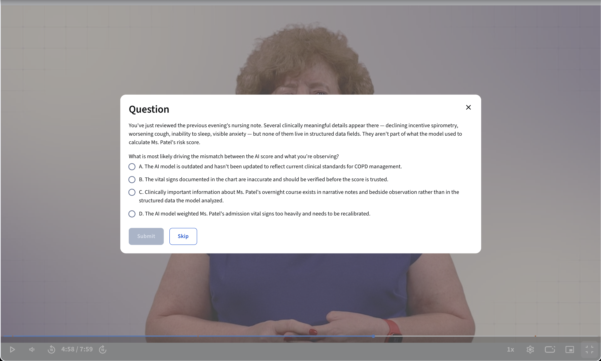

Sample · Coursera Specialization
AI for Nurses
Helping nurses make sense of AI in their everyday work, and bring their own clinical judgment to the decision.
My roleLearning design and project management
PartnersDuke School of Nursing and Johnson & Johnson
TimelineSeptember 2025–September 2026
FormatThree online courses
01 · Where we started
Defining the learner journey
Survey data from working nurses and conversations with partners shaped a progression I shared early with stakeholders. The Specialization is also accredited for nursing continuing education, so accreditation requirements informed design decisions along the way.
Up to 9 credit hoursContinuing education for nurses through Duke University Health System Clinical Education and Professional Development, accredited by ANCC, ACPE, and ACCME.
Select a course to see the learning objectives.
02 · What we learned from nurses
Four ways AI shows up on a shift
In a co-design session, registered nurses described AI as something flagged, summarized, prioritized, or triggered. These patterns carry through all three courses. Select one to see the vocabulary it introduces.
A score fires, an alert appears, or a Best Practice Advisory surfaces. The system detected a pattern and drew your attention to it.
What nurses see
Deterioration alertFall risk scoreSepsis BPA
Vocabulary it leads to
Course 1Predictive AI · Machine learning · Inputs & outputs
Course 2Features & labels · Training data · Sensitivity & specificity
03 · How the courses are structured
Seven activity types
Lessons pair a short expert video with readings that build vocabulary and connect it to real tools, then check understanding along the way.
SME videosDuke School of Nursing faculty introduce concepts in clinical language, in videos under seven minutes. In Course 3, case study videos pause three times so nurses make a real-time clinical judgment.
Term spotlightsShort readings on a single term or a closely related pair framed as an experienced Nurse mentor grounded in a clinical example. The goal is to develop a shared vocabulary rather than memorizing terminology.
Inside the AI toolReadings that unpack a specific clinical tool, such as the Epic Deterioration Index or the Braden Scale, with a consistent structure for what it can and cannot see.
Dialogue activitiesOne per course, before the final assessment: an AI learning coach guides a three-to-five exchange conversation about a tool or moment from the nurse’s own practice.
Practice quizzesUngraded checkpoints within a lesson, typically after a reading or before a video.
Graded quizzesApplication-level questions with unlimited attempts and feedback on every answer option, correct and incorrect.
Post-case reflectionsAfter each Course 3 case, a case summary and a filled-in reflection: the tool and output, what the model had and couldn’t see, the gap, and what the nurse noticed.
The capstone in each courseThree Dialogue (Coursera AI Coach) activities
Course 1Seeing AI in Your WorkflowNurses identify and describe an AI tool from their own practice.
Course 2Evaluating AI in Your WorkflowNurses bring a tool they’ve had questions about and evaluate it.
Course 3Apply AI in Your WorkflowNurses bring a clinical moment where an AI output shaped a decision.
04 · How the learning comes together
Three learning examples
Each module introduces a concept, gives learners a way to explore it, and connects it to practice. I used ChatGPT, Claude, and Claude Code to support the design. The first two activities below are fully working, so you can try them as a learner would.
01Comparing two kinds of AI
Learners run a fall risk score and a generated discharge summary again to see what changes, before the terms predictive and generative are introduced.Live activity · try it hereThis is the same activity learners use in the course
02Exploring what a model uses
Learners change what a model receives and watch its output respond, including what a nurse knows that the model doesn’t.Live activity · try it hereChange the inputs and watch the output respond
03Practicing a clinical decision
Five guided clinical cases pause mid-video so learners decide what they would do, then reflect on their reasoning.
05 · Bringing the project together
Launched September 2026
I led project management through writing, recording, activity development, learner testing, and partner review. Partners funded a second year, and we’re now developing a new Specialization.
Sep 2025Project kickoff
Oct–Nov 2025Understanding learners’ needs and testing early activities
Dec 2025Script writing and recording prep
Jan–Feb 2026Media recording and video visual design
Mar 2026Co-design session with nurses
Apr–May 2026Interactives, assessments, and supplemental materials
Jun 2026Course build and learner testing
Jul 2026Final partner review, CEUs approved
Sep 2026Launch